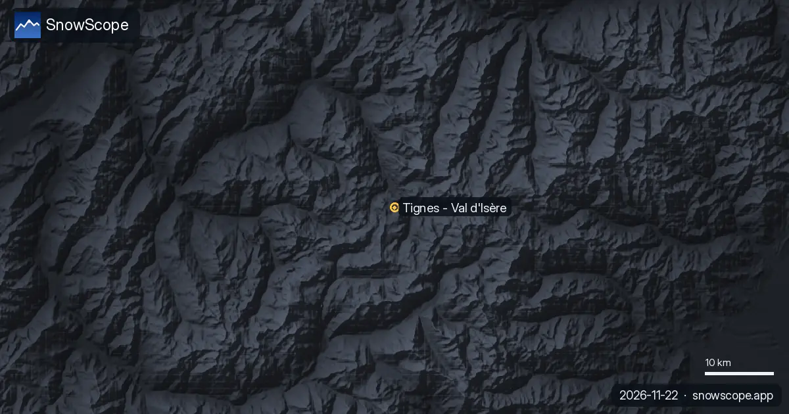

Tignes snow conditions by month: the glacier, Val Claret and Tignes-le-Lac compared
Tignes is one of the few Alpine resorts where the villages themselves sit above two thousand metres, and the linked area with Val d'Isère climbs from 1559 m to 3447 m on the Grande Motte glacier: 211 km of mapped runs, 84 lifts. Snow conditions are the reason people book it. Here is what they usually are, month by month, from our history of 46 past winters at three heights of the area.
See the live snow forecast for Tignes - Val d'Isère in the SnowScope appSnow depth, powder alerts and the 3D map, free.

Three heights, three winters
At the base of the area (1559 m, the valley of Val d'Isère and the lowest runs) the usual winter peak is 117 cm. At mid-mountain (2503 m, the height of the Tignes villages and the main bowls) it is 216 cm. At the top (3447 m, the glacier) it is 372 cm. The middle number is the one that describes a Tignes holiday: the villages are already at the height where the snow is serious.
Autumn and December: an early start
The first snow lies at mid-mountain by October 5 in half of the winters. November usually leaves 33 cm at mid-mountain and 76 cm on the glacier, which is why autumn skiing happens on the Grande Motte while the villages wait. December reaches 80 cm at mid-mountain and 161 cm at the top; nine of ten Decembers had at least 43 cm at mid-mountain.
January to April: the long plateau
January shows 126 cm at mid-mountain, February 164 cm, March 179 cm and April 178 cm, the deepest month at that height. On the glacier the usual depth climbs to 263 cm in March and 297 cm in April.
The most reliable week at mid-mountain is ISO week 16, in mid-April, with a usual 186 cm and every past winter above 50 cm. Mid-mountain holds 50 cm or more for 21 weeks in nine of ten winters, 27 weeks in half of them. That late peak is the Tignes signature: the best skiing weeks are later than most people book.
May: the glacier keeps going
In May the glacier still has 253 cm in a usual year, and the last snow at mid-mountain leaves by June 19 in half of the winters. Snow lies on the ground at mid-mountain for 234 days a year, and for 241 days at the top.
Month by month at three heights
In December a usual winter has 42 cm at the base (1559 m), 80 cm at mid-mountain (2503 m) and 161 cm at the top (3447 m). In January a usual winter has 73 cm at the base (1559 m), 126 cm at mid-mountain (2503 m) and 213 cm at the top (3447 m). In February a usual winter has 97 cm at the base (1559 m), 164 cm at mid-mountain (2503 m) and 239 cm at the top (3447 m).
In March a usual winter has 94 cm at the base (1559 m), 179 cm at mid-mountain (2503 m) and 263 cm at the top (3447 m). In April a usual winter has 58 cm at the base (1559 m), 178 cm at mid-mountain (2503 m) and 297 cm at the top (3447 m).
A poor winter and a rich winter
The spread matters as much as the middle. At mid-mountain, nine of ten past Marchs had at least 138 cm and one in ten had 228 cm or more; at the top the same range runs from 192 to 345 cm.
Over the whole winter the peak at mid-mountain ran from 152 cm in the poorest past winter to 295 cm in the richest, around a usual 216 cm; at the top from 257 to 627 cm around 372 cm. Snow lay on the ground at mid-mountain for 234 days in a usual winter, and the first snow of the season settled there by October 5 in half of the winters. These are model values for the area over 46 past winters, not resort measurements; they describe what to expect, not what the groomers will add.
How the past 46 winters changed
The usual peak on the glacier went from 401 cm in the first 15 winters of our record to 377 cm in the last 15. At mid-mountain it went from 228 to 213 cm. The resort is losing a little at the top and holding in the middle; last winter's mid-mountain peak was 222 cm.
Tips for skiers
- March and April are the deepest weeks at village height; late season is Tignes' strength.
- Early December is safe on the upper bowls and the glacier; the lowest runs towards Val d'Isère are the ones to watch.
- Our depths are an estimate for the area from past winters, not resort measurements; lift openings are on the official site.
- Check the avalanche bulletin for the Haute-Tarentaise before leaving the pistes.
References and credits
- Wikipedia, 'Tignes', retrieved 22 November 2026: villages above two thousand metres, Grande Motte glacier, link with Val d'Isère. en.wikipedia.org/wiki/Tignes
About these numbers
Snow numbers: SnowScope snow history, 46 past winters (1980-81 to 2025-26) at three heights of the resort, a model of the past corrected for height (an estimate for an area, not resort reports). Lift, run and access facts: the sources listed below, checked on the date shown.
Official avalanche bulletins: Météo-France – Bulletin d'estimation du risque d'avalanche
Cite this report
For research, teaching or the press: the numbers and charts are free to reuse under CC BY 4.0 with this citation.
SnowScope (2026), Tignes snow conditions by month: the glacier, Val Claret and Tignes-le-Lac compared, https://snowscope.app/blog/en/2026/11/tignes-snow-conditions-by-month-glacier-val-claret-tignes-le-lac.html, accessed 2026-11-22
SnowScope (Atlas Labs). (2026, November 22). Tignes snow conditions by month: the glacier, Val Claret and Tignes-le-Lac compared. SnowScope snow reports. https://snowscope.app/blog/en/2026/11/tignes-snow-conditions-by-month-glacier-val-claret-tignes-le-lac.html
BibTeX
@misc{snowscope2026tignessnowconditionsbymo,
author = {{SnowScope (Atlas Labs)}},
title = {Tignes snow conditions by month: the glacier, Val Claret and Tignes-le-Lac compared},
year = {2026},
month = nov,
howpublished = {\url{https://snowscope.app/blog/en/2026/11/tignes-snow-conditions-by-month-glacier-val-claret-tignes-le-lac.html}},
note = {Published 2026-11-22 11:14 UTC; accessed 2026-11-22}
}· CC BY 4.0 · Methods, data and tools →
Tignes - Val d'Isère: snow and temperature by height, this winter vs last (tools) →
Follow Tignes - Val d'Isère
Free: a message when fresh snow is coming, and the forecast every morning.
More snow reports

New snow forecast for the Alps through early December. Saint François Longchamp leads with 228 cm expected over 14 days, starting with 35 cm on Thursday.

Early-season snow in the Alps is running 38% above the 46-year average. La Plagne's mid-slopes hold 36 cm more than usual for this date, with heavy snow forecast through Sunday.

Ten European ski resorts ranked for December value, led by Les 2 Alpes with 75 cm of mid-mountain snow.